Round 6: seven harder scenes, four Anima models
Scenes range from simple to very complex, to test both prompt adherence and how forgiving each model is when a prompt asks too much. Prompts apply the lessons from round 5: every held object has a hand, emotions stay with their character, bystanders are short and face somewhere, and the main character is described as fair-skinned and slim. Click an image for full screen; arrow keys step through, Esc closes.
Negative: worst quality, low quality, early, old, score_1, score_2, score_3, artist name, blurry, jpeg artifacts, bad anatomy, bad hands, missing fingers, extra fingers, long fingernails, claws, merged limbs, extra limbs, floating objects, text, watermark, child, loli, gore, blood
Jog simple
masterpiece, best quality, score_9, score_8, score_7, year 2025, newest, highres, absurdres, very aesthetic, safe, 1girl, solo, Aoi: a 22-year-old woman, shoulder-length pink-dyed hair with dark roots tied in a short ponytail, athletic, white tank top, black running shorts, running shoes, wireless earbuds, jogging toward the viewer mid-stride, cheerful determined smile, full body, slight low angle, a seafront promenade at sunrise, calm sea, palm trees, a distant corporate island skyline, dominant warm peach sky, broad pale blue sea, sparse pink accents, soft golden backlight
All four get it right: easy scene, forgiving. JANIMA is the only one that kept the pink hair with dark roots; the others blend in purple-black. Cleanest anatomy: JANIMA and Aesthetic.
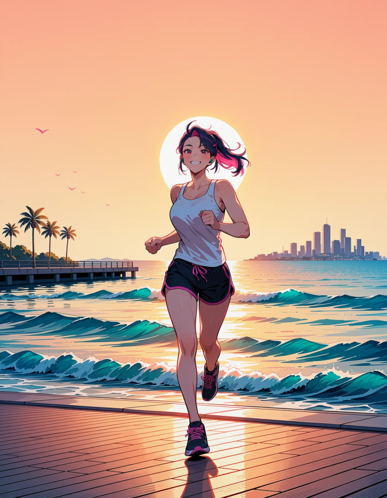
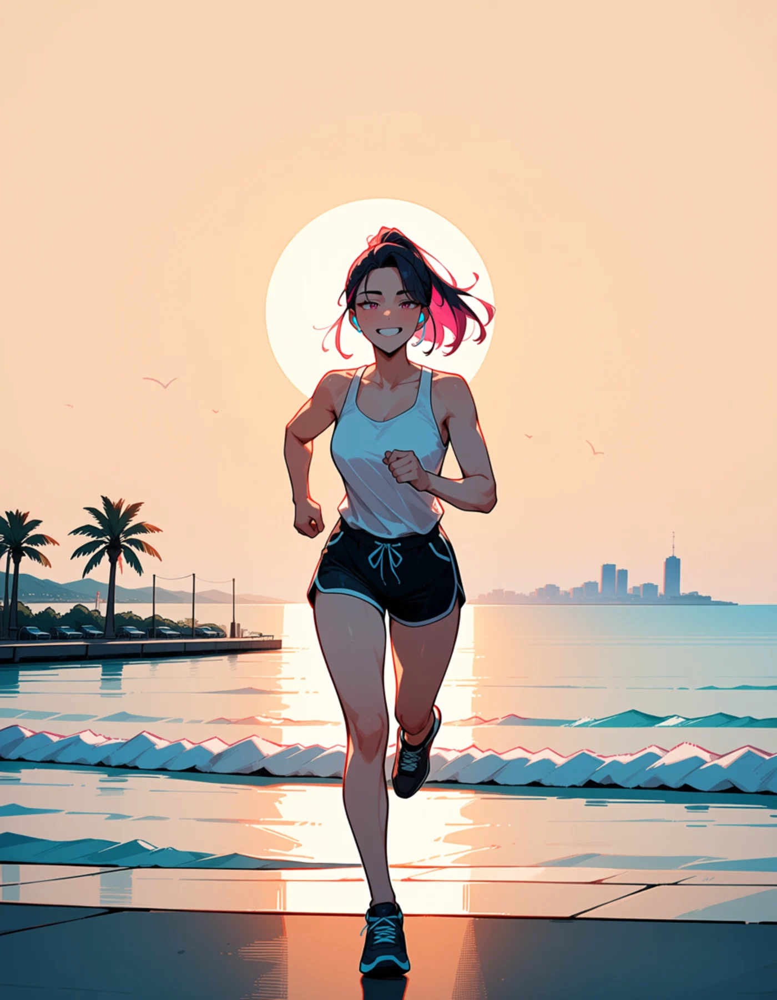
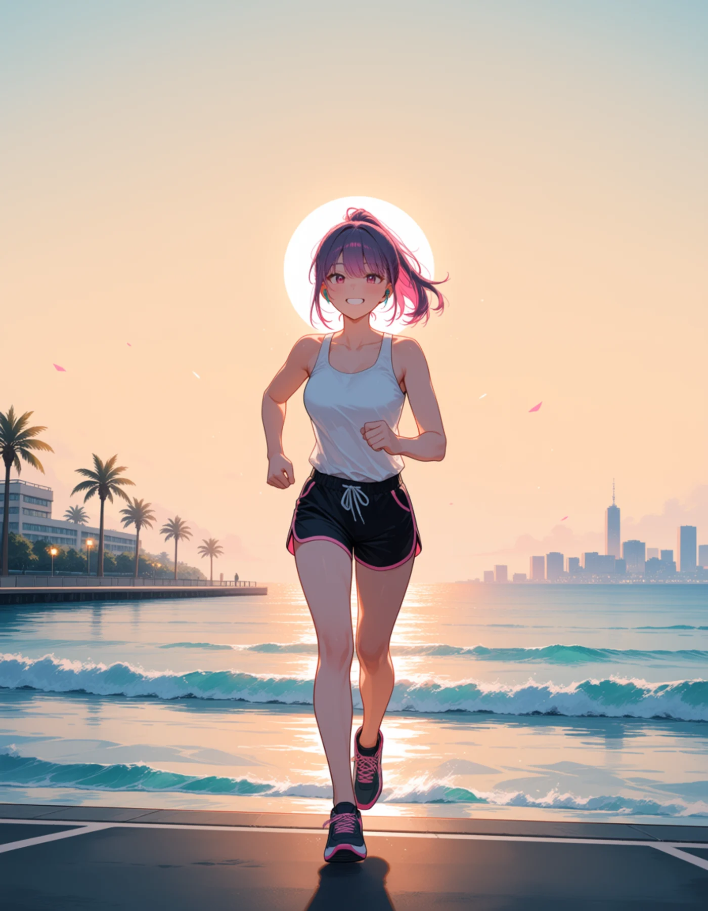
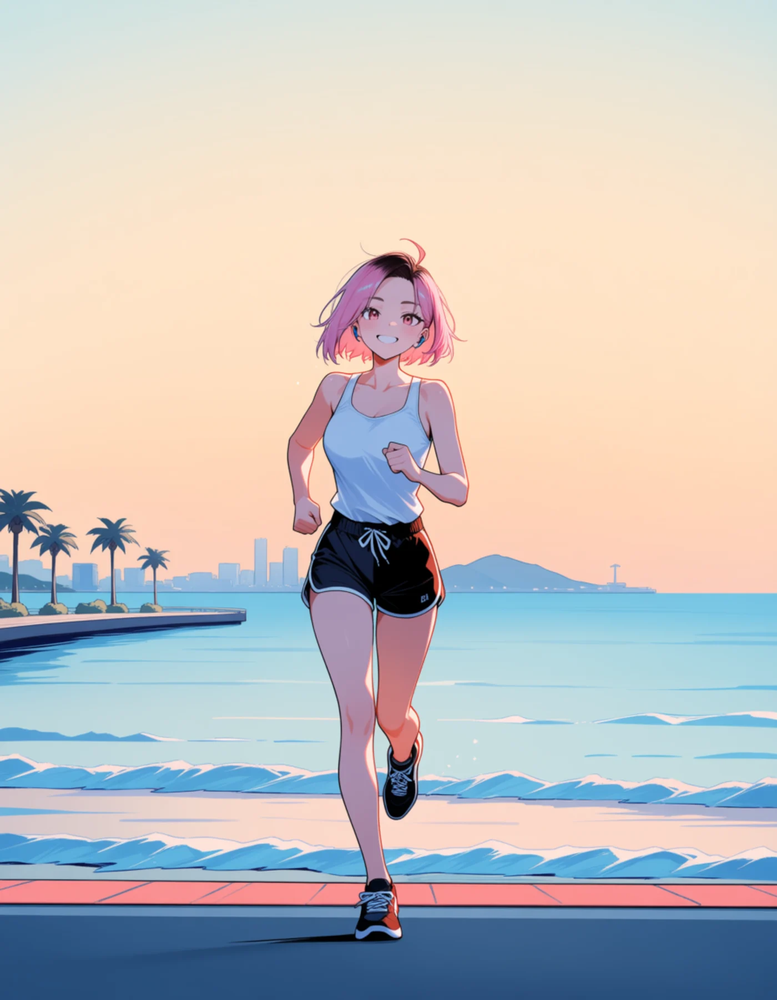
Volleyball medium
masterpiece, best quality, score_9, score_8, score_7, year 2025, newest, highres, absurdres, very aesthetic, safe, 1girl focus, crowd, Rei: a 26-year-old woman, steel grey eyes, long silver-grey hair in a high ponytail, athletic, black sports top and shorts, jumping high at the net and spiking the volleyball with her right hand, fierce focused expression; spectators: a crowd of office workers in company t-shirts behind a rope, cheering, facing the court; Rei in mid-air in the centre, the ball just leaving her right hand, the net in the foreground, low angle from the sand, dynamic action shot, a company sports day on a sandy beach court, bright blue sky, flags, harsh midday sun, dominant sand beige and sky blue, sparse red flag accents
All four put Rei mid-air at the net with a crowd. None shows the actual spike: the ball floats above her hand in every version. RDBT has the strongest crowd and energy; JANIMA the most dynamic pose but a fish-eye horizon. Rei's eyes are too small to read the steel grey here.
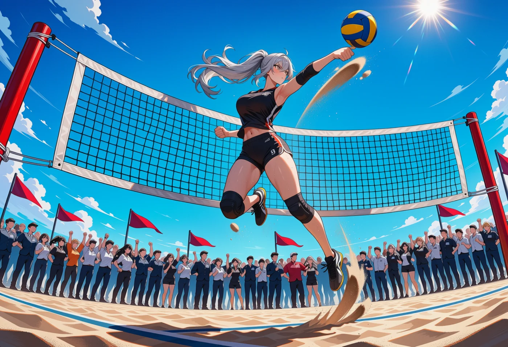
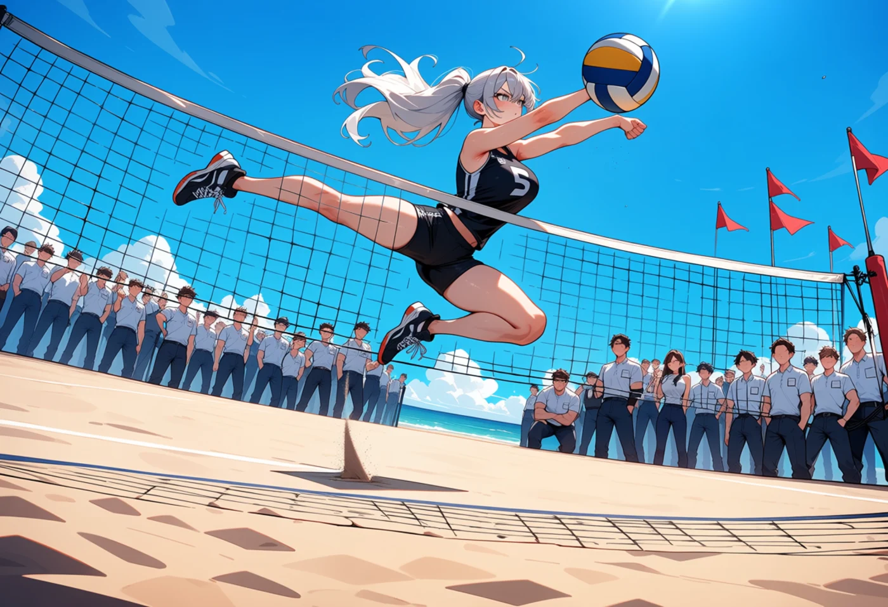
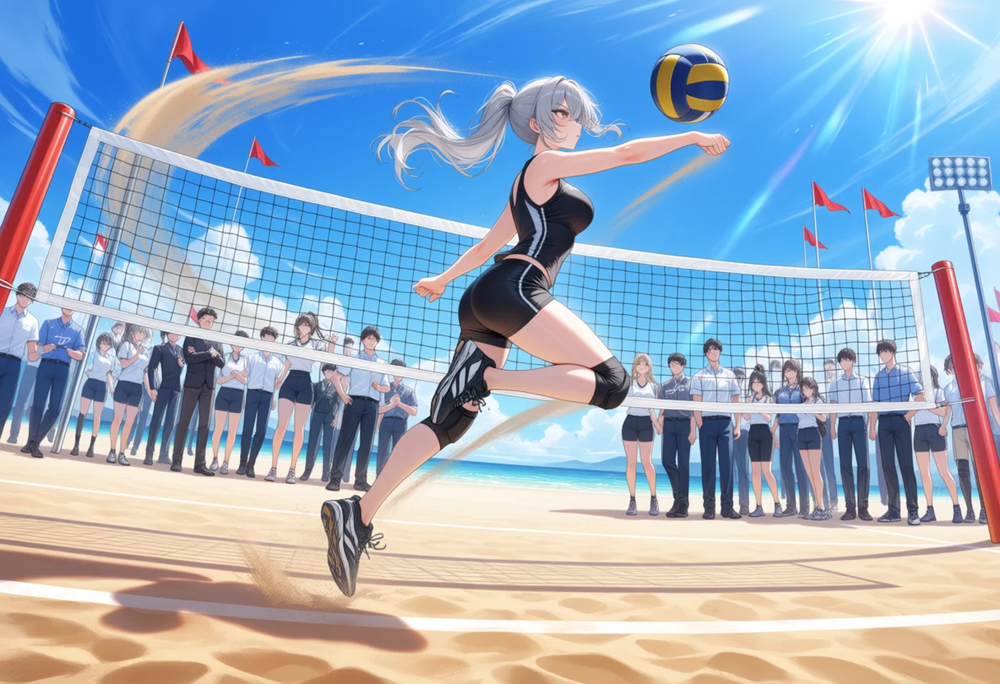

Romance medium
masterpiece, best quality, score_9, score_8, score_7, year 2025, newest, highres, absurdres, very aesthetic, safe, 1boy, 1girl, couple, main character: a 29-year-old Nordic man, fair pale skin, messy sandy-blond hair, light blond eyebrows, blue eyes, light stubble, slim average build, no blush, dark coat over his white shirt, sitting on a bench, looking out at the city with a quiet smile; Emi: a 32-year-old curvy woman, warm honey-brown shoulder-length hair, a delicate silver necklace with a small heart pendant, cream knit sweater, sitting close beside him on his left, her head resting on his shoulder, eyes half closed, content smile; both seen from the side, sitting on a wooden bench, her left hand resting on his arm, medium shot from slightly behind the bench, a rooftop garden at night, string lights overhead, the glittering city skyline and the bay below, dominant deep navy night, broad warm amber string-light glow, sparse city-light sparkles
The best-behaved scene of the round. All four draw the head-on-shoulder pose, the heart necklace, the city lights. JANIMA and RDBT make the main character look Nordic (fair skin, light brows); Aesthetic still adds a blush and heavier stubble despite "no blush". One Obsession is the softest and most painterly.

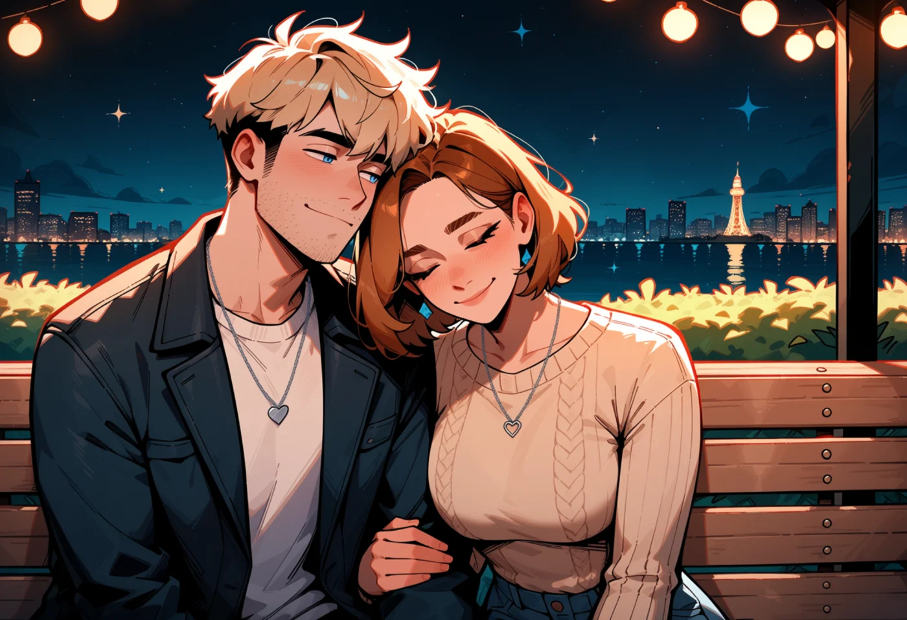
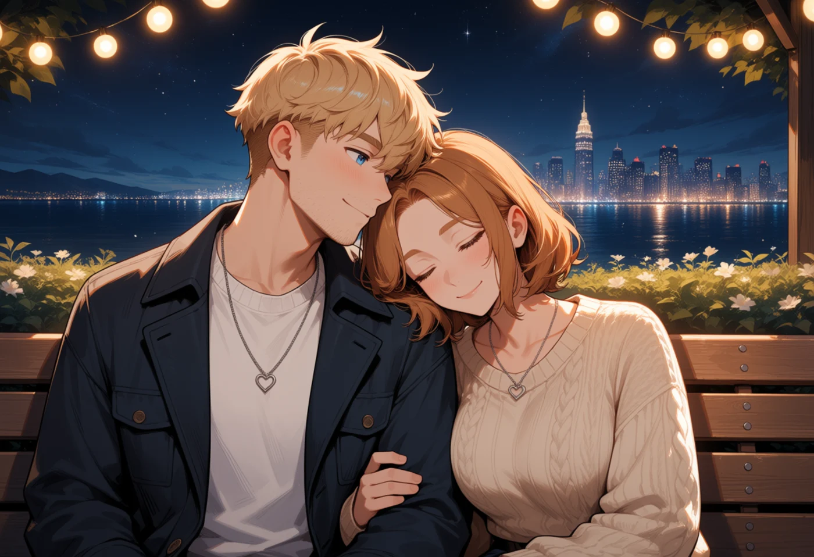

Swim complex
masterpiece, best quality, score_9, score_8, score_7, year 2025, newest, highres, absurdres, very aesthetic, safe, multiple girls, crowd, Rei: a 26-year-old woman, silver-grey hair under a white swim cap, black athletic racing swimsuit, swimming freestyle in the centre lane, one arm reaching forward, clearly in the lead; two other women swimmers in navy racing swimsuits and swim caps in the lanes on either side, half a body length behind her; referee: a man in a white polo shirt standing at the pool edge on the right, holding a whistle, facing the swimmers; spectators: rows of employees in the stands in the background, cheering; three lanes with lane ropes, splashes, the finishing wall in the foreground, low angle from the pool edge at water level, wide shot, an indoor company swimming pool, big windows, banners, bright daylight through the windows, dominant turquoise water, broad white tiles, sparse red lane-rope accents
Hard scene, and no model fully passes. RDBT and One Obsession draw a real race (RDBT has three swimmers but all face the camera like synchronised swimming). Aesthetic gives one large swimmer from behind. JANIMA draws Rei standing on the water: the worst anatomy/logic of the round. Referee and stands appear in all.

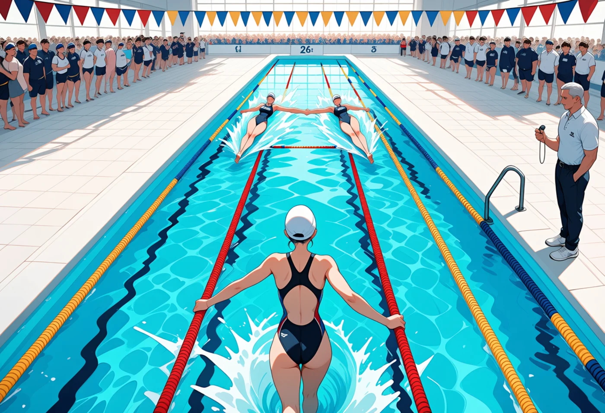

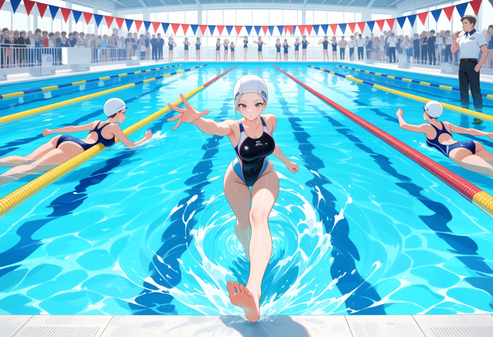
Shootout complex
masterpiece, best quality, score_9, score_8, score_7, year 2025, newest, highres, absurdres, very aesthetic, safe, 2boys, action, Ishibashi: a wiry security guard in his sixties, grey pencil moustache, glasses on a chain, navy uniform and peaked cap, standing on the left in a firing stance, holding a pistol in both hands aimed to the right, bright muzzle flash, stern expression; burglar: a figure in a black hoodie and black ski mask, carrying a laptop bag in his left hand, running away to the right, looking back over his shoulder; the two far apart across the lobby, shattered glass from a broken turnstile flying between them, wide shot, low angle, dramatic, the huge glass atrium lobby of a corporate headquarters at night, dark, security lights, dominant dark blue night, broad cold white spotlight beams, sparse orange muzzle-flash accent
All four nail it: guard on the left with muzzle flash, masked burglar fleeing right with a bag, shattered glass between them. RDBT and One Obsession have the best composition and light; Aesthetic puts the burglar too close; JANIMA is clean but flatter.


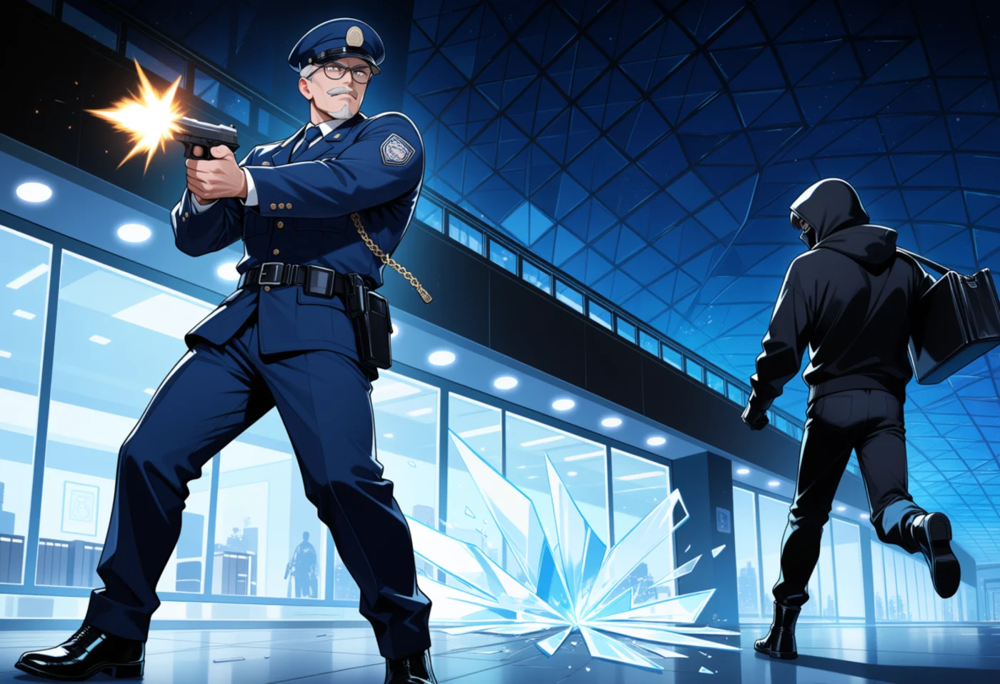
Copyroom complex
masterpiece, best quality, score_9, score_8, score_7, year 2025, newest, highres, absurdres, very aesthetic, safe, 2girls, 1boy, 1other, surprised, Mio: a 25-year-old woman, messy black hair with green underneath in a bun, glasses, black hoodie, standing by the copier on the left, jumping back, hand over her mouth, flustered; Aoi: a 22-year-old woman, pink-dyed shoulder-length hair with dark roots, varsity jacket, standing by the copier on the right, stepping away from Mio, flustered, embarrassed laugh; main character: a 29-year-old Nordic man, fair pale skin, messy sandy-blond hair, light blond eyebrows, blue eyes, light stubble, slim average build, no blush, standing in the open doorway in the foreground, seen from behind and the side, frozen with one hand still on the door handle; Yuzuki: a 31-year-old woman with glossy wavy chestnut hair, peeking over his shoulder from the corridor behind him, eyebrows raised, amused; the two women had just been kissing and have sprung apart, standing a step away from each other, both facing the doorway, a cramped office copy room, a large copier glowing with a green light, paper stacks, medium-wide shot from just behind the doorway, cold fluorescent light, dominant pale grey, broad green copier glow, sparse pink accent
The hardest prompt, and the clearest difference between models. RDBT, Aesthetic and One Obsession all keep the two women kissing and turn the main character into someone in Mio's hoodie with green hair: the character blocks bleed into each other. JANIMA is the only one that gets the story: Mio with a hand over her mouth, Aoi turning away, the main character in the doorway, Yuzuki peeking. His outfit changed to a suit, but the scene reads.

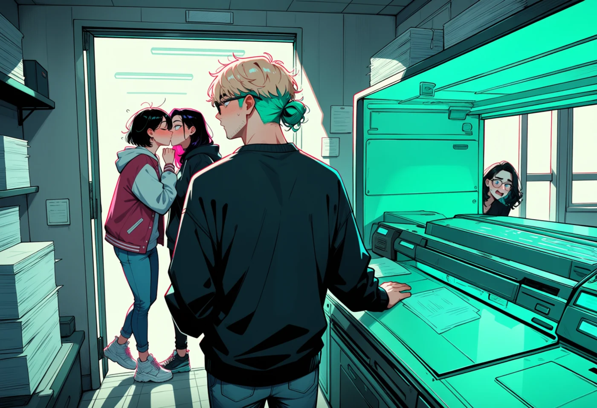
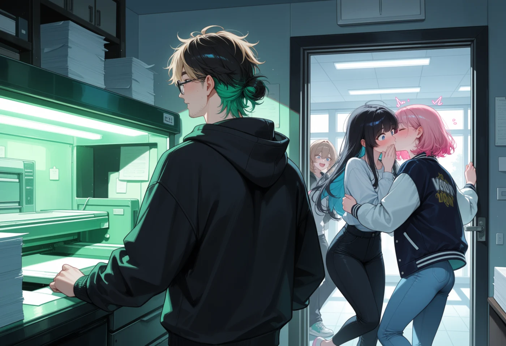

Cabin very complex
masterpiece, best quality, score_9, score_8, score_7, year 2025, newest, highres, absurdres, very aesthetic, safe, 4girls, 4boys, group, main character: a 29-year-old Nordic man, fair pale skin, messy sandy-blond hair, light blond eyebrows, blue eyes, light stubble, slim average build, no blush, holding a drink in his right hand, standing in the centre of the deck, laughing; Emi: a 32-year-old curvy woman, warm honey-brown shoulder-length hair, silver heart necklace, next to him on his left, smiling; Mio: a 25-year-old woman, black hair with green underneath, glasses, hoodie, sitting on the deck railing on the left, holding a handheld game console; Rei: a 26-year-old woman, silver-grey ponytail, white linen shirt, leaning on the railing on the right, holding a wine glass in her left hand; Aoi: a 22-year-old woman, pink hair with dark roots, varsity jacket, waving toward the viewer; Yuzuki: a 31-year-old woman, glossy wavy chestnut hair, elegant sundress, sitting on a wooden chair in the foreground right; Goro: an old man with round glasses and white stubble, beige cardigan, sitting on a bench, smiling; Ishibashi: a wiry old man with a grey pencil moustache, apron over a polo shirt, grilling skewers at a barbecue on the far left, holding tongs in his right hand; everyone on the wooden deck of a large log cabin, mostly facing the viewer, wide shot, eye level, a beautiful mountain cabin for the company retreat, pine forest and snow-capped mountains behind, a lake below, golden hour, dominant warm gold light, broad pine green, sparse sky blue
Eight named people is past what these models can place exactly, so this tests forgiveness. RDBT and JANIMA produce the most readable group (about ten people on the deck, the grill, the old men, a woman in a sundress). JANIMA's is the cleanest, with everyone facing the camera; One Obsession merges faces; Aesthetic crowds the frame.
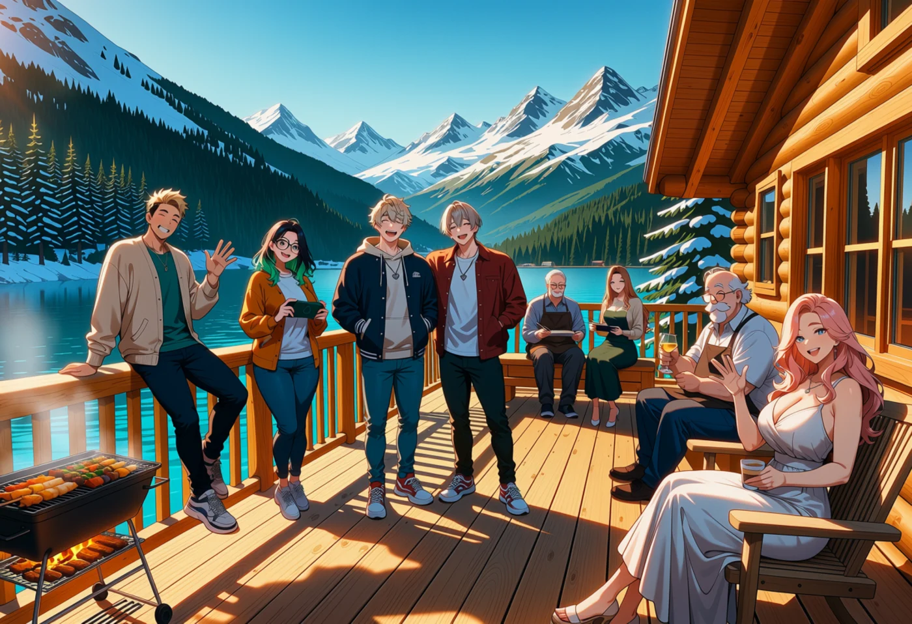
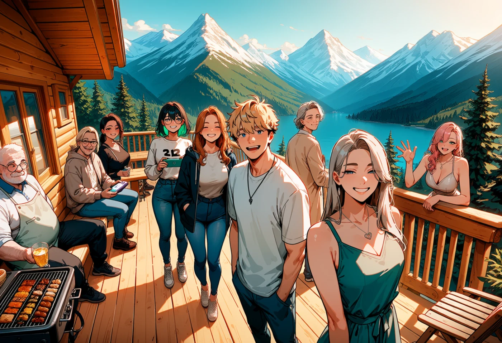
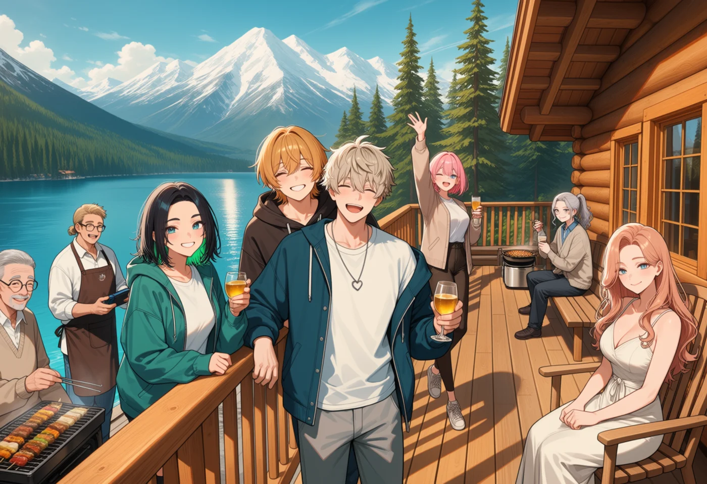
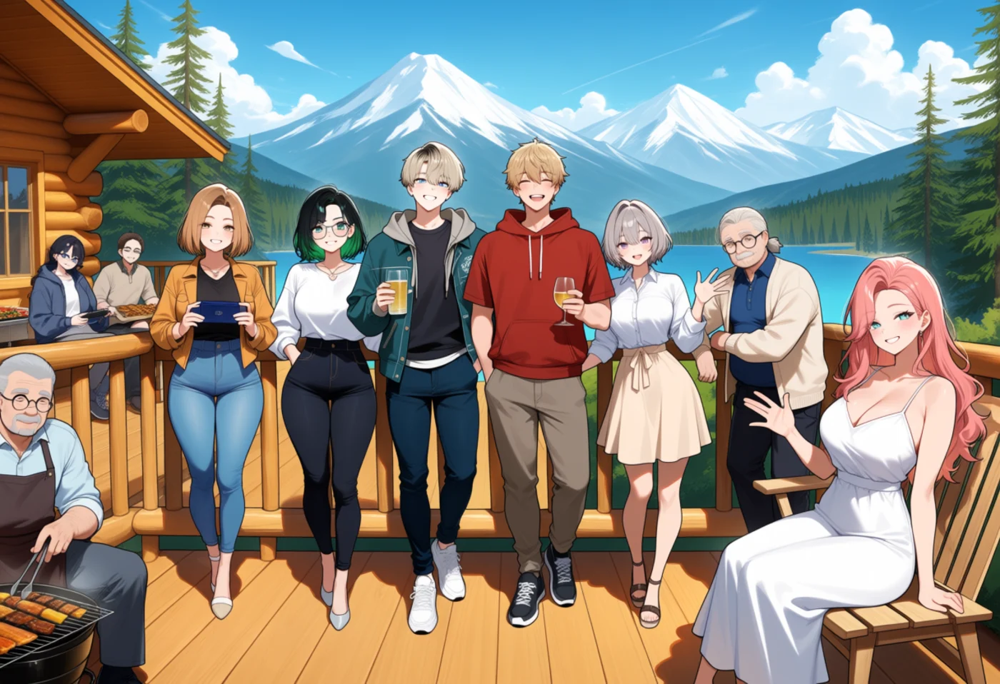